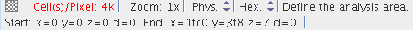
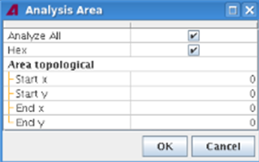

Specifying an analysis area
The analysis area is a user-definable section of the DUT to which the BFM Viewer restricts its statistical analysis. You define it either graphically in any bit fail map display or numerically in the Analysis Area window.
About this task
Analysis areas are used when you are interested in the numbers of failed cells (both total and specific failure combinations) in a specific area instead of throughout the entire DUT.
Changes to the analysis area are effective immediately. The specification of the analysis area are part of the session and are lost whenever the session is closed, for example, when you change the device or exit the BFM Viewer. To save it, you need to save the session as described in Creating, saving and restoring sessions.
Before you begin
The bit fail maps must have been loaded, as described in Loading bit fail maps into the BFM Viewer.
Procedures
Creating an analysis area graphically
Creating a new analysis area removes any existing analysis area.
- In the status bar of the Chip Overview tab or any existing detail view, make sure that the
mode indicator (at the top right) is showing "Define the analysis area":

If it is not, right-click anywhere in the window and choose Define Analysis Area from the shortcut menu.
- With the mouse, select the area that you want to be the analysis area.
As soon as you release the mouse, the selected area is made the new analysis area. It is indicated in all bit fail map displays by the color chosen for Analysis Area in the Colors tab. The coordinates of the analysis area are shown in the Analysis Area window.
- To make the table in the Fail Combinations tab show the numbers from the analysis area (instead of from the entire DUT) and restrict the Failed Cells list in the Chip Overview tab to cells from the analysis area, activate the analysis area by deactivating the Analyze All option in the Analysis Area window (see Creating an analysis area numerically, below)
Creating an analysis area numerically
- Choose .
The Analysis Area window opens.

- To specify an analysis area, make sure that Analyze All is not
checked.
Analyze All will analyze the entire DUT.
- Check Hex if you want to input hexadecimal numbers for coordinates. Otherwise, decimal number will be used.
- Enter the desired coordinates in the Start x, Start y, End x, and End y fields.
- Click OK.
Removing the analysis area
There is rarely a need to specifically remove the analysis area:
- To set a different analysis area, simply create the new one, as described above. This automatically removes the existing area.
- To return to analyzing the entire DUT, just deactivate the analysis area, as described below.
Activating the analysis area
To activate the analysis area, deactivate the Analyze All option in the Analysis Area window. (Note that this setting is the opposite of the state of the analysis area: If Analyze All is on, the analysis area is off, and vice versa.)
Deactivating the analysis area
To deactivate the analysis area, activate the Analyze All option in the Analysis Area window.
Setting the analysis area to a different section of the DUT
Create a new analysis area in the desired location, as described in Creating an analysis area graphically or Creating an analysis area numerically (above).
Functional changes
- Introduced before SmarTest 6.3.2